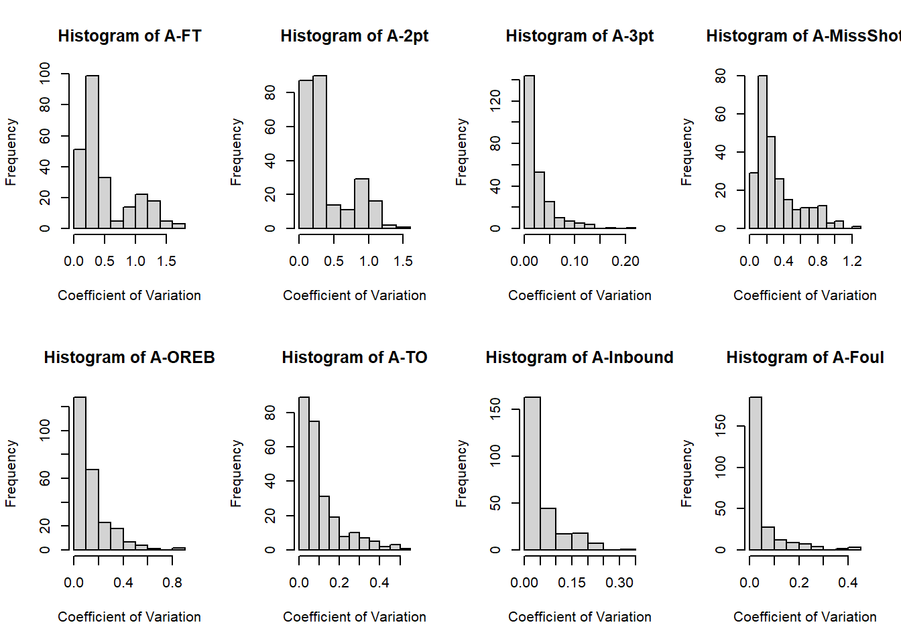
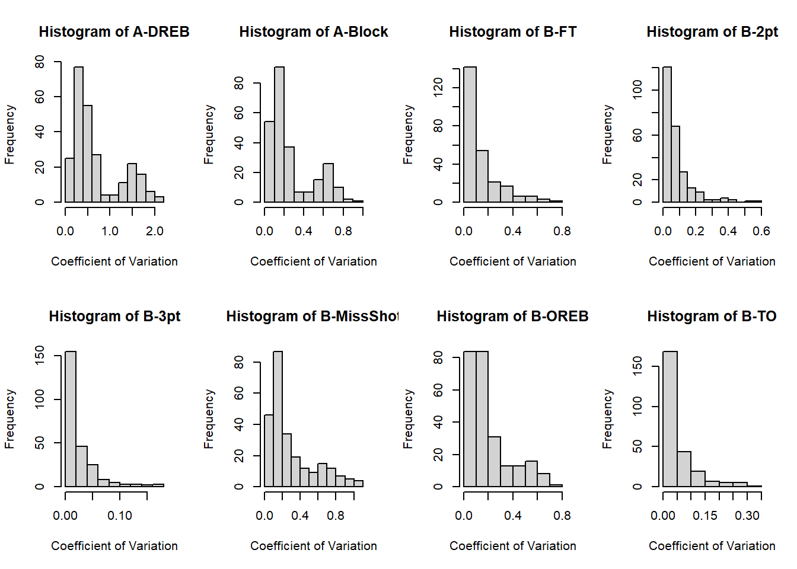
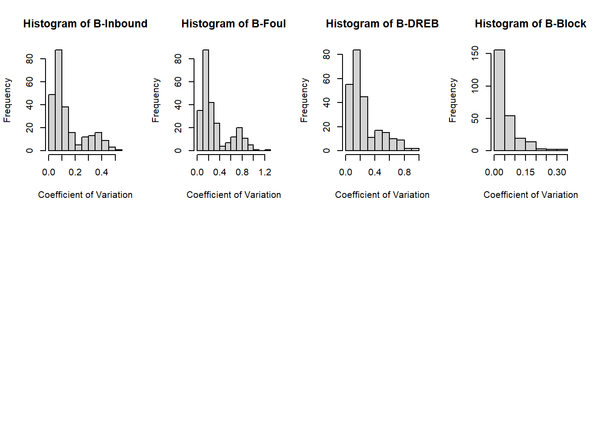

A novel application of the Markov Chain stochastic model.
Author
Harrison Cassel
Published
April 20, 2023
Introduction
There is a notable lack of sports analytics research into women’s basketball (WBB) in general, which is relatively unsurprising, given the novelty of advanced sports analytics and the historical inequity between the men’s and women’s renditions of the sport. Most interesting to me is the fact that no one in the relevant journals appears to have applied the discrete Markov Chain model to NCAA DI Women’s Basketball. For this reason, I have adopted a scaled-up version of this project as my undergraduate thesis topic and, correspondingly, created the following summary of my identified research gap (Table 1). This report will discuss the data collection/cleaning, transition matrix-building, and basic season simulation/diagnostics R programs (GitHub) I have developed to conduct my research, as well as an early-stage case-study using my proposed model.
Table 1.Literature review search results, by search location.
Search location
Search query (or queries)
# of relevant results
Notes
Google Scholar
“ncaa womens basketball markov”
“ncaa womens basketball monte carlo”
0
Located articles relevant to WBB but none applying Markov Chains.
Returned very few (three or so) articles applying similar methods to men’s basketball.
JSTOR
“ncaa womens basketball markov”
0
Oddly enough, the second result was titled “Monte Carlo Tennis.”
EBSCOhost
“basketball” AND “markov” AND “women”
0
Returned various news articles about the Olympic Games.
IOS Press Content Library
“ncaa womens basketball markov”
0
Similar to JSTOR, the second result discussed NCAA water polo performance analytics.
SIAM Publications Library
“ncaa womens basketball markov”
0
One result: the same tennis article returned by JTSOR.
De Gruyter
“ncaa womens basketball markov”
0
Two results. The first applied this methodology to NCAA women’s soccer. The second was another men’s basketball article.
The American Statistician (via Taylor & Francis Online)
“basketball markov”
0
Only about four results, none of which use the word “women” in their abstracts. For this research, the articles are of dubious relevance.
Data Collection and Cleaning
I opted to use the wehoop library from the sportsdataverse, created by Saiem Gilani and Geoff Hutchinson. This library offers convenient access to ESPN’s vast database of play-by-play data. Besides the benefit of convenience, one of this library’s best features is just how clean the data comes out. Wehoop includes a function to gather play-by-play data for every game in a given DI WBB season (e.g., 2022-23, 2021-22, etc.). It returns massive R data-frames (’22-’23, for example, is 500k+ rows) that would be difficult to manage all at once, but this seasonal design makes segmenting data management tasks natural and easy. Not using the built-in convenience would require an impressive CPU/RAM setup, which my poor laptop learned the hard way. Thus, my data_management.R functions, generally speaking, aggregate and clean data iteratively over the season(s) of interest.
My proposed state space represents a greatly-simplified version of basketball, but it still captures the overall movement of the game, along with select nuances that I expect will contribute to an interesting final analysis. My transition_matrix.R script includes a function to print the final state space:
# Hidden: use source() to load transition_matrix.R# Print state names and ID numbersprint(states_dataframe())
The table above gives the proposed state space. Team A is the “team of interest.” For example, in an analysis of the South Carolina Gamecocks, the Gamecocks would be “Team A,” while their opponents would collectively be Team B. Another interpretation of this designation could be home/away, but such an analysis is outside of the scope of this report. It may be an area of future research, however, since studies of this and other sports have identified a significant “home team advantage” effect.
These states were derived from the initial event types in the data, as follows:
Table 2.Creation of the state space.
Original Event(s)
State Space Event
Made shot worth one point
MadeFreeThrow
Made shot worth two points
TwoPoint
Made shot worth three points
ThreePoint
Missed shot that would have been worth two or three points
MissedShot - Blocked shots are also recorded as missed shots, so recorded blocks have their corresponding missed shot event deleted.
Offensive rebound
Offensive Rebound
Lost Ball Turnover
Lost Ball Turnover
Jumpball, timeout
Inbound
Personal/technical foul
Foul
Defensive rebound
Defensive Rebound
Block shot
Block Shot
End of game/period, TV timeout, N/A, dead ball rebound, steal (turnover)
Removed from data set
Building Transition Matrices
I adopted an iterative process for generating Markov Chain models fitted to particular teams, seasons, and competitions. My transition_matrix.R function, update_transition_matrix(), takes the processed data-frame from data_management.R’s team_games() function. Then, it goes play-by-play through each game, making note of each state transition and returning a transition matrix of transition counts (not probabilities). This frequency-based approach allows for the iterative addition of game and/or season data to a given model. When all of the relevant counts are calculated, the data management function, make_transition_probs(), can be called to convert the frequencies to probabilities, thus creating a true Markov Chain, with row probabilities adding to one.
I previously discussed the Team A/B labeling strategy adopted in the data cleaning phase to facilitate faster and more convenient data management. Of course, the simulated outcomes of specific games (i.e., between two specific teams) are of great interest to the sports analyst, making “comparison matrices” an integral aspect of this project. Thankfully, the A/B strategy has a lovely extension, here! Since a given team’s model considers its team as A and every other team as B, creating a comparison matrix simply requires placing one team’s transition probabilities in section A (states 1-10) of a new transition matrix, and another team’s in section B (states 11-20). This can be accomplished using the create_comparison_matrix() function in transition_matrix.R.
The process of fitting a Markov Chain model for the 2022-23 South Carolina Gamecock is presented below. This code returns the fitted transition matrix for South Carolina’s 2022-23 season. Please note: only 1/4 of the South Carolina matrix is shown, since the entire 20x20 matrix takes up an entire page.
# Hidden: use source() to load data_management.R# Get the play-by-play data for the '22-'23 Gamecocks (ESPN team ID 2579)gamecocks.pbp <-team_games(team.id=2579, seasons=2023) # data_management.R# Create empty transition matrix, & update the countstrans.mat <-matrix(data=0, nrow=20, ncol=20)trans.mat <-update_transition_matrix(trans.mat, gamecocks.pbp) # transition_matrix.R# Convert trans.mat frequencies to probabilities, & printtrans.mat <-make_transition_probs(trans.mat) # transition_matrix.Rtrans.mat <-round(trans.mat, 2) # <- to make more readable
Having created the methods necessary to collect data and transform it into team-specific transitions matrices, the process of simulating individual games is relatively easy. Here, I again consider the most recent Gamecocks team and construct simulated season statistics to be compared to the ground truth team stat-line available on the team’s website (see Diagnostics). Since this will be an apples-to-apples comparison, a simulated result that closely matches reality should indicate that this is an appropriately-designed model.
sim_season() is a function in simulations.R uses regular season data to fit transition matrices for a team of interest (the Gamecocks, in this case), as well as for all of the team’s opponents. Then, using the “stacking” method of comparison matrix construction, it simulates the team of interest’s season, recording the stat line (states’ occurrence counts) for each game.
The mean number of state transitions per game is in the neighborhood of 300, and I found that 310 steps/game produces the most consistently realistic results. The season is simulated 250 times because the data downloading/cleaning requirements, as well as the large number of state transitions (310 steps * ~31 games * 250 iterations = 2.4M transitions).
# Hiddden: use source() to load simulations.Rgamecocks.espn.id <-2579sim.results <-sim_season(team.a.id = gamecocks.espn.id,year =2023, # 22-23 seasonn.steps.per.game =310,n.iter =250)
summary(sim.results)
A-FT A-2pt A-3pt A-MissShot A-OREB
Min. :320.0 Min. :739.0 Min. :130.0 Min. : 956 Min. :555.0
1st Qu.:374.0 1st Qu.:806.2 1st Qu.:154.0 1st Qu.:1029 1st Qu.:618.0
Median :394.0 Median :821.0 Median :163.5 Median :1044 Median :634.0
Mean :392.6 Mean :820.7 Mean :163.4 Mean :1045 Mean :632.7
3rd Qu.:410.0 3rd Qu.:836.0 3rd Qu.:173.0 3rd Qu.:1062 3rd Qu.:649.0
Max. :467.0 Max. :901.0 Max. :200.0 Max. :1124 Max. :702.0
A-TO A-Inbound A-Foul A-DREB
Min. :438.0 Min. : 91.0 Min. :485.0 Min. :845.0
1st Qu.:491.2 1st Qu.:106.2 1st Qu.:531.2 1st Qu.:905.2
Median :505.0 Median :113.0 Median :547.0 Median :919.5
Mean :504.7 Mean :114.0 Mean :547.2 Mean :920.9
3rd Qu.:520.0 3rd Qu.:121.0 3rd Qu.:559.0 3rd Qu.:937.0
Max. :578.0 Max. :155.0 Max. :614.0 Max. :984.0
A-Block B-FT B-2pt B-3pt B-MissShot
Min. :191.0 Min. :328.0 Min. :452.0 Min. :120.0 Min. : 994
1st Qu.:222.0 1st Qu.:383.2 1st Qu.:501.2 1st Qu.:142.0 1st Qu.:1047
Median :232.0 Median :400.0 Median :515.5 Median :148.5 Median :1065
Mean :233.2 Mean :401.3 Mean :514.9 Mean :149.6 Mean :1064
3rd Qu.:244.8 3rd Qu.:419.0 3rd Qu.:529.0 3rd Qu.:157.0 3rd Qu.:1085
Max. :276.0 Max. :480.0 Max. :562.0 Max. :193.0 Max. :1128
B-OREB B-TO B-Inbound B-Foul
Min. :385.0 Min. :453.0 Min. : 85.0 Min. :572.0
1st Qu.:426.2 1st Qu.:495.0 1st Qu.:110.0 1st Qu.:613.0
Median :442.0 Median :510.5 Median :116.0 Median :628.0
Mean :440.8 Mean :512.3 Mean :116.5 Mean :628.8
3rd Qu.:454.8 3rd Qu.:528.8 3rd Qu.:124.0 3rd Qu.:644.0
Max. :503.0 Max. :568.0 Max. :147.0 Max. :687.0
B-DREB B-Block Wins
Min. :573.0 Min. : 99.0 Min. :24.00
1st Qu.:609.0 1st Qu.:119.0 1st Qu.:29.00
Median :623.0 Median :125.0 Median :30.00
Mean :622.9 Mean :125.9 Mean :29.46
3rd Qu.:636.0 3rd Qu.:133.8 3rd Qu.:31.00
Max. :674.0 Max. :161.0 Max. :32.00
Diagnostics
How do these simulations compare to reality?
Diagnostics.R includes a function for returning true season box score (which shows various aggregate team statistics) for any given team. A good place to start in assessing this model’s ability to “play” basketball is by comparing the average outcomes above to the 2022-23 Gamecocks’ actual performance.
# Hiddden: use source() to load diagnostics.Rtrue.box <-get_true_team_box(2579, seasons=c(2023))
print(true.box)
MadeFreeThrow TwoPoint ThreePoint Missed Shot Offensive Rebound
A 569 955 163 1158 683
B 353 543 154 1165 370
Lost Ball Turnover Inbound Foul Defensive Rebound Block Shot
A 468 133 543 1154 326
B 514 167 737 713 146
It seems that the Markov Chain got at least somewhat close, but a more meaningful approach to assessing the accuracy of this model would be to look at the distribution of its errors. Below, I first use eval_sim_accuracy() from diagnostics.R to loop through each simulated season and record the squared distance of each variable from the truth (squared error). I then find what is effectively the coefficient of variation: \(\frac{\sqrt{error^2}}{truth}\) for each variable of each simulation. Looking at the summary statistics for the collection of coefficients should offer good insight into the model’s capability.
A-FT A-2pt A-3pt A-MissShot
Min. :0.0900 Min. :0.0500 Min. :0.00000 Min. :0.0500
1st Qu.:0.2300 1st Qu.:0.1700 1st Qu.:0.01000 1st Qu.:0.1500
Median :0.3500 Median :0.2700 Median :0.02000 Median :0.2200
Mean :0.5207 Mean :0.4059 Mean :0.03048 Mean :0.3264
3rd Qu.:0.7150 3rd Qu.:0.5400 3rd Qu.:0.04000 3rd Qu.:0.4450
Max. :1.6200 Max. :1.5700 Max. :0.22000 Max. :1.2200
A-OREB A-TO A-Inbound A-Foul
Min. :0.0000 Min. :0.0000 Min. :0.00000 Min. :0.00000
1st Qu.:0.0600 1st Qu.:0.0400 1st Qu.:0.02000 1st Qu.:0.01000
Median :0.1000 Median :0.0800 Median :0.04000 Median :0.03000
Mean :0.1452 Mean :0.1096 Mean :0.05912 Mean :0.05536
3rd Qu.:0.1875 3rd Qu.:0.1500 3rd Qu.:0.08000 3rd Qu.:0.06000
Max. :0.8800 Max. :0.5100 Max. :0.32000 Max. :0.44000
A-DREB A-Block B-FT B-2pt
Min. :0.1600 Min. :0.0500 Min. :0.0000 Min. :0.0000
1st Qu.:0.3100 1st Qu.:0.1125 1st Qu.:0.0500 1st Qu.:0.0300
Median :0.4550 Median :0.1800 Median :0.0900 Median :0.0600
Mean :0.6886 Mean :0.2781 Mean :0.1438 Mean :0.0836
3rd Qu.:0.8275 3rd Qu.:0.3875 3rd Qu.:0.1800 3rd Qu.:0.1000
Max. :2.1200 Max. :0.9200 Max. :0.7500 Max. :0.5700
B-3pt B-MissShot B-OREB B-TO
Min. :0.00000 Min. :0.0400 Min. :0.0200 Min. :0.00000
1st Qu.:0.01000 1st Qu.:0.1200 1st Qu.:0.0900 1st Qu.:0.02000
Median :0.02000 Median :0.1900 Median :0.1450 Median :0.03000
Mean :0.02908 Mean :0.3024 Mean :0.2053 Mean :0.05384
3rd Qu.:0.04000 3rd Qu.:0.4175 3rd Qu.:0.2575 3rd Qu.:0.07000
Max. :0.18000 Max. :1.1000 Max. :0.7300 Max. :0.34000
B-Inbound B-Foul B-DREB B-Block
Min. :0.0200 Min. :0.0600 Min. :0.0400 Min. :0.00
1st Qu.:0.0600 1st Qu.:0.1400 1st Qu.:0.1100 1st Qu.:0.02
Median :0.1000 Median :0.2100 Median :0.1800 Median :0.04
Mean :0.1494 Mean :0.3208 Mean :0.2602 Mean :0.06
3rd Qu.:0.1900 3rd Qu.:0.4000 3rd Qu.:0.3275 3rd Qu.:0.08
Max. :0.5300 Max. :1.2400 Max. :1.0000 Max. :0.33
par(mfrow=c(2,4))for (i in1:20) { current <- coeffs.var[,i] current.name <-names(coeffs.var)[i]hist(current, xlab='Coefficient of Variation', main=paste('Histogram of',current.name))}



Create simulated matrix using the simulation.R funcs. Then, discuss diagnostics.R, it’s funcs, and apply them to compare ground truth SC to simulated SC. Think it best to consider the simulation of SC vs. an opponent (perhaps Iowa or LSU). Could identify what in the game looked different than the sim expected. Could also look at long-run transition probabilities for the matchup to identify each teams’ relative advantages. Could compare these to reality to see if certain things were shut down, allowed to thrive, or if other things were missed by the model.